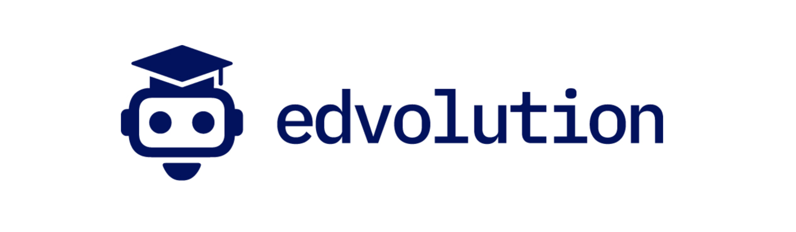

Taller de
proyectos reales
Avanza lo que tienes entre manos con IA y criterio profesional · PDI · Universidad Nacional Abierta y a Distancia

Esta sesión no es un taller de herramientas
Es una sesión para avanzar proyectos universitarios reales usando IA con criterio profesional.
Tres preguntas. Un proyecto que avanza.
Tipos de producto en el contexto PDI
- Tengo mis propios papers, guías o documentos
- Necesito citas exactas y trazabilidad total
- No puedo tolerar que la IA invente referencias
- Quiero analizar, sintetizar o comparar fuentes
- Necesito crear desde cero o redactar
- Quiero diseñar, planificar o idear
- Información de contexto general o externo
- Transformar, mejorar o adaptar un texto
Ejemplos de reducción de alcance
Ronda de diagnóstico
1 minuto por persona · el formador mapea los proyectos en vivo.
Trabajamos un proyecto juntos
¿Cuáles son los 5 argumentos teóricos más citados en estos papers sobre aprendizaje activo? Compáralos e indica dónde hay consenso y dónde aún hay debate. Cita el párrafo exacto de cada uno.
Eres experto en evaluación universitaria [P]. Diseña [A] una rúbrica analítica para la defensa de TFM en Ciencias Sociales [R], tono académico y claro [T]. 4 criterios, 3 niveles, tabla editable en Docs [S].
Tu turno. Avanza tu proyecto.
60 minutos · sala única · el formador circula y atiende en directo.
Puntos de partida, no fórmulas cerradas
¿Cuáles son los puntos de consenso y los debates abiertos en estos papers? Resume en 3 bloques temáticos con cita exacta de cada fuente.
Lee este borrador como jurado evaluador. ¿Qué 5 preguntas harías en la defensa? Señala los 3 puntos más débiles del marco teórico con cita del párrafo exacto.
Eres experto en evaluación por competencias universitarias [P]. Diseña [A] una rúbrica analítica para [asignatura/actividad] [R], tono académico riguroso [T]. 4 criterios, 3 niveles, tabla editable en Docs [S].
Actúa como investigador senior en [campo]. Elabora el estado del arte sobre [tema]: autores clave (2019–2024), tendencias emergentes, brechas de investigación y las 8 referencias más citadas en APA 7.
¿Qué hemos producido?
2–3 voluntarios comparten pantalla · 5 minutos cada uno · el grupo comenta en el chat.
Quien quiera puede preparar 3 minutos para la sesión conjunta: proyecto, herramienta usada y resultado. No es obligatorio — pero ayuda a construir la comunidad de práctica de la UNAD.
Compromiso y siguiente paso
Gracias
Taller de proyectos reales · PDI · Universidad Nacional Abierta y a Distancia
rate_review